| 日付 | 2010年7月4日（日） - 2010年7月11日（日） |
|---|---|
| メンバー | 単独 |
5日目
6時ごろ目が覚めて外に出る。ちょうど日が出てきたところで、
テントサイトの裏にある山が輝いている。
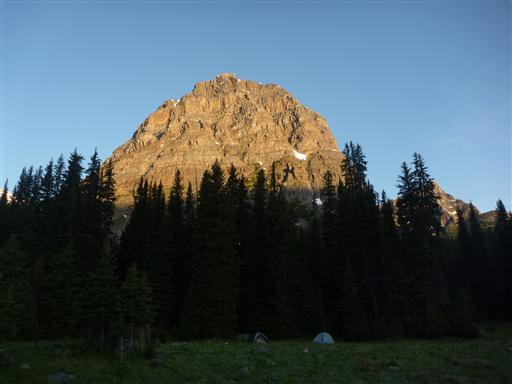
テントを撤収して出発する。テントの表面は凍りついていて、撤収作業はかなり手が冷たかった。
この辺りの標高はおよそ2000mだ。
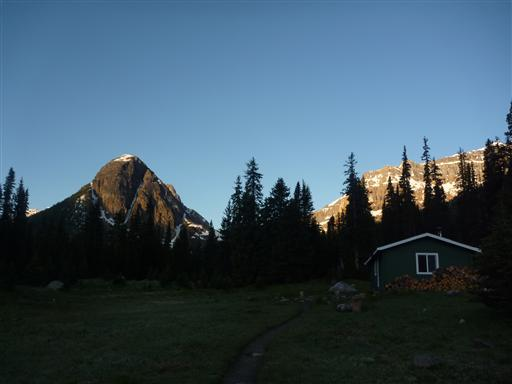
ホワイト・グローブ・フラワー。ウェスタン・アネモネと混ざってよく咲いている。
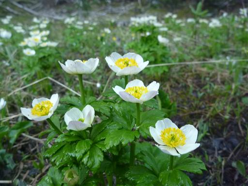
今日も最初は樹林帯の中を登っていく。今日は峠を越えてヒーリー・パス・トレイルを歩く予定だ。
この辺りの林床は苔ではなく、お花畑が広がっている。
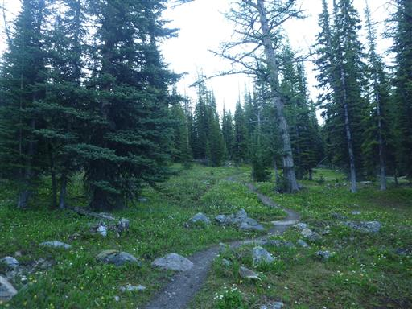
高度を上げていくと、だんだんと展望が良くなってくる。
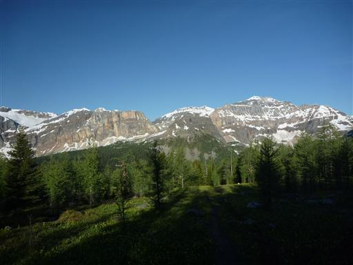
マウンテン・マーシュ・マリーゴールド。水の流れの中に咲いている。
花弁の裏側は薄い青色で非常に美しい。
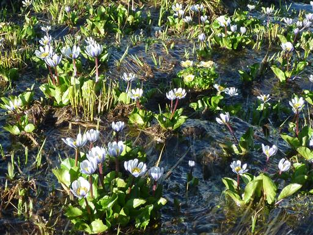
振り返ると、ボール・レンジの山々が一望できる。
真中の白い山はマウント・ボール、手前の2つのピークはファラオ・ピークスだ。
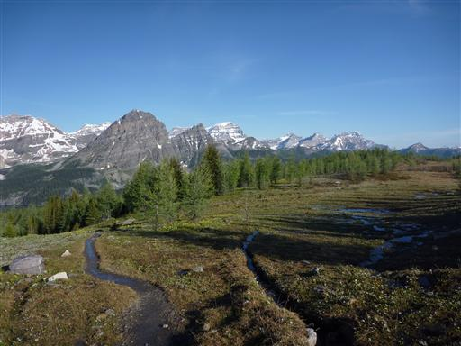
峠（ヒーリー・パス）に差し掛かる。ここには若干雪が残っている。
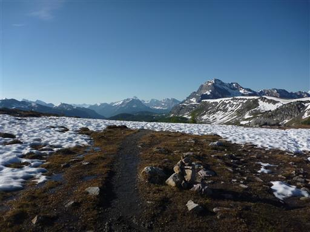
足元にはグレイシャー・リリーの群落が広がっている。昨日からずっと、とにかくこの花が多い。
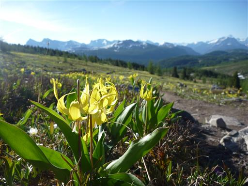
峠を越えると、その先にも素晴らしい展望が広がる。どこを見渡しても山また山だ。
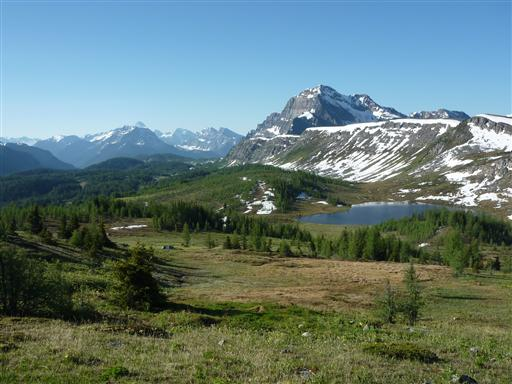
きたない鳥の鳴き声が聞こえるので上を見上げると、木の枝に鳥が止まっている。
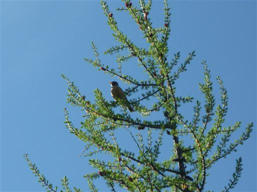
緩やかな斜面に広がるお花畑の中を歩いていく。空はきれいに晴れ渡っていて快適だ。
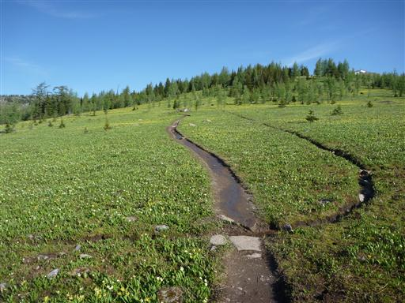
分岐点に到着。カナダのトレイルでは分岐点に必ず標識が立っている。
英語とフランス語が併記されている。
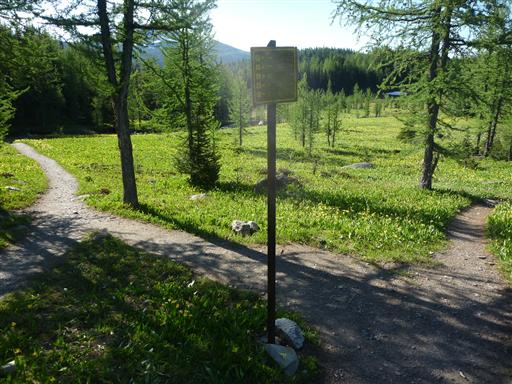
ここからは延々と樹林帯の中の道を下っていく。
素晴らしい展望とお花畑が広がるヒーリー・クリーク・パスも大半は樹林帯の中だ。
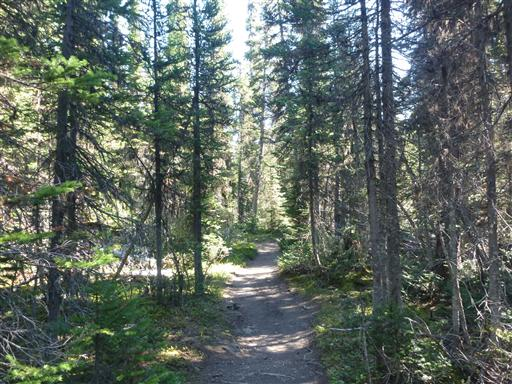
これまでカナダのトレイルでは1日に2～3組程度しか人に出会わなかったが、
このトレイルではとにかく人とよくすれ違う。ヒーリー・パスまで往復の1日ハイキングが人気のようだ。
日本人ともよくすれ違うが、最初に何語で挨拶を交わすか少し迷ってしまう。
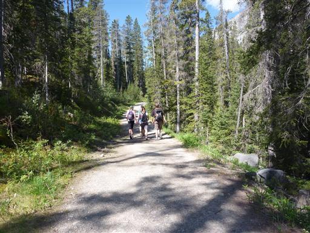
登山口に到着。大きな駐車場には多くの車が停まっている。
朝は誰もいなかったヒーリー・パスも昼には賑わうのかもしれない。
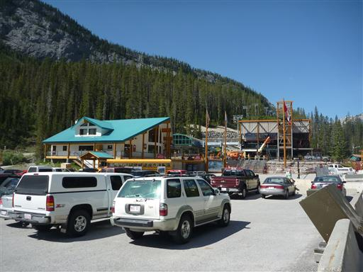
駐車場の側ではビッグホーン・シープの群がうろうろしている。
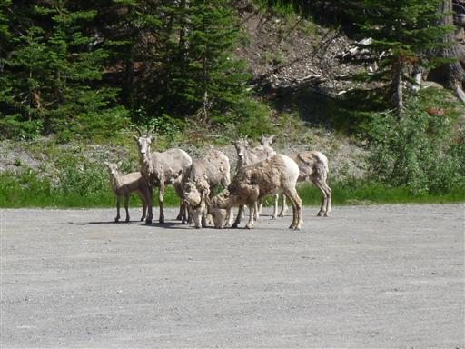
炎天下の中、車道を歩いていくと、今度はビッグホーン・シープの雄と出くわす。
山の中では大型動物などとは全く出会わなかったのに、エルクといいビッグホーン・シープといい
人工的な車道近くでよく見かけるのは、どういうわけだろう？
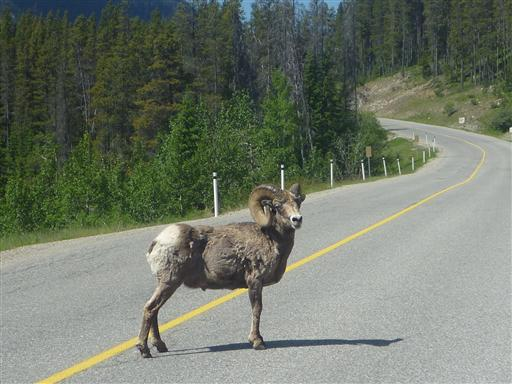
車道歩きはおよそ9km。5kmほど歩いたところで通りかかった車に拾ってもらう。
アメリカから来たそうで、息子がIwakuniに住んでいると言っていたが、
Iwakuniがどこにあるのかすぐには分からず反応できなかった。
帰って調べてみたら山口県だった。
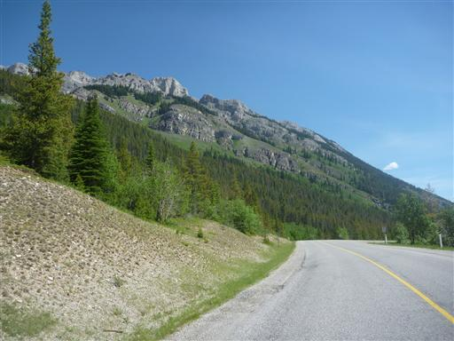
車道の終点で降ろしてもらう。彼はここからレイク・ルイーズ（バンフとは反対方向）に行くそうだ。
ここからは車道歩きでなくトレイルが付けられている。バンフまであと6.8kmだ。
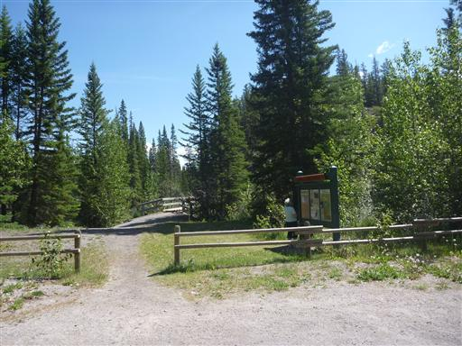
このトレイルも樹林帯に囲まれ、馬の糞が多く、あまり面白くない道だ。
平坦な道、荷物もそれほど重くないはずなのに、なぜか疲労が大きい。
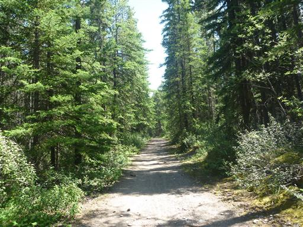
ようやく展望が開ける。目の前にマウント・カスケードが見えてくる。
が、足が前に進まない。休み休み歩いていく。
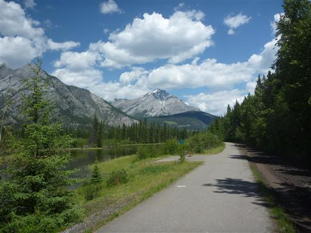
遠くの方に、3日前に訪れた奇峰マウント・ルイの姿が見える。
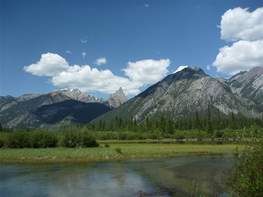
やっとの思いでバンフに到着。体は下痢気味で疲れ果てた。
インフォメーション・センターでパスポートを受け取ったあと、
明日の最終日は少し楽をしようと思い、1日ツアーに申し込む。
その後も体調は悪化し続け、悪寒がする。飲んだ水が悪かったのだろうか？
キャンプ場に入ってすぐに寝ることにする。
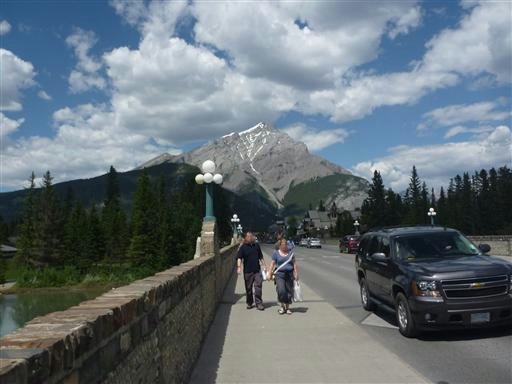